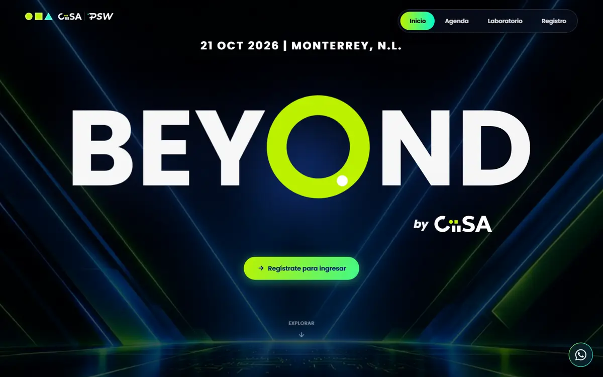
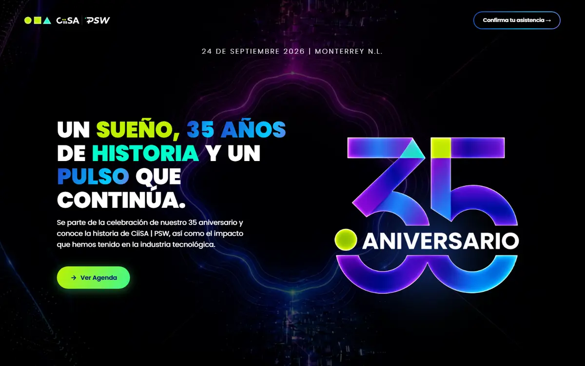
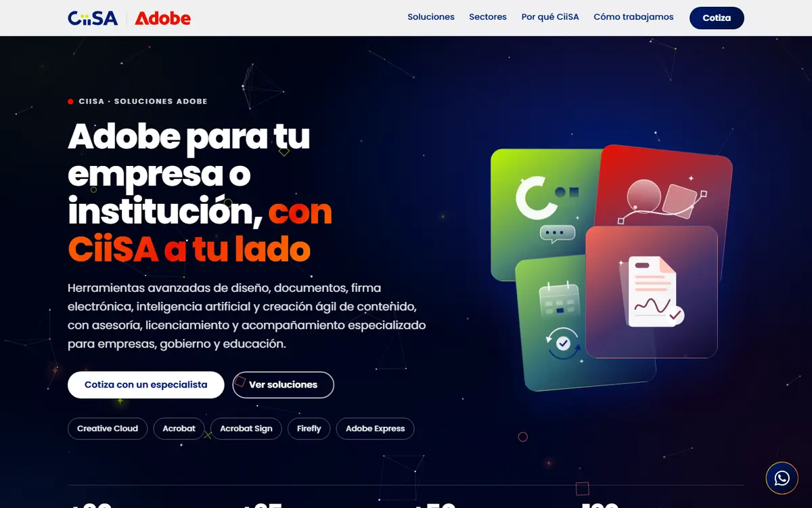
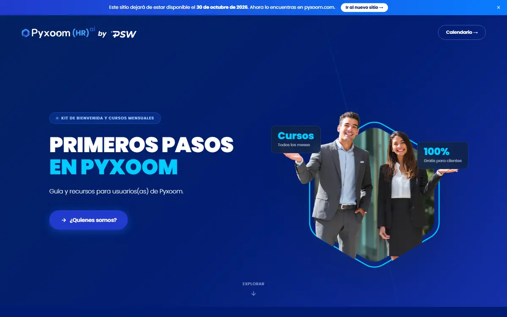

// sitios web y eventos
CiiSA | PSW
Sitios de eventos y de producto para CiiSA | PSW, publicados y en uso. Entra a cada uno y míralo en tu pantalla.
// publicados y en uso
Sitios para visitar
Estos son los sitios que construí para CiiSA | PSW. Cada tarjeta lleva a su sitio en una pestaña nueva, y la vista previa cambia de proporción según tu pantalla.
Sitios publicados
-

-

-

-

// se sigue escribiendo
Esta historia sigue
Mi historia en CiiSA | PSW se sigue escribiendo, y lo hago con mucho gusto.
Aquí irán sumándose más sitios, el trabajo de Pyxoom en HubSpot y el contenido que he hecho para la empresa.
¿Te late este tipo de trabajo?
Cuéntame qué necesitas y armamos tu plan, paso a paso, sin compromiso.